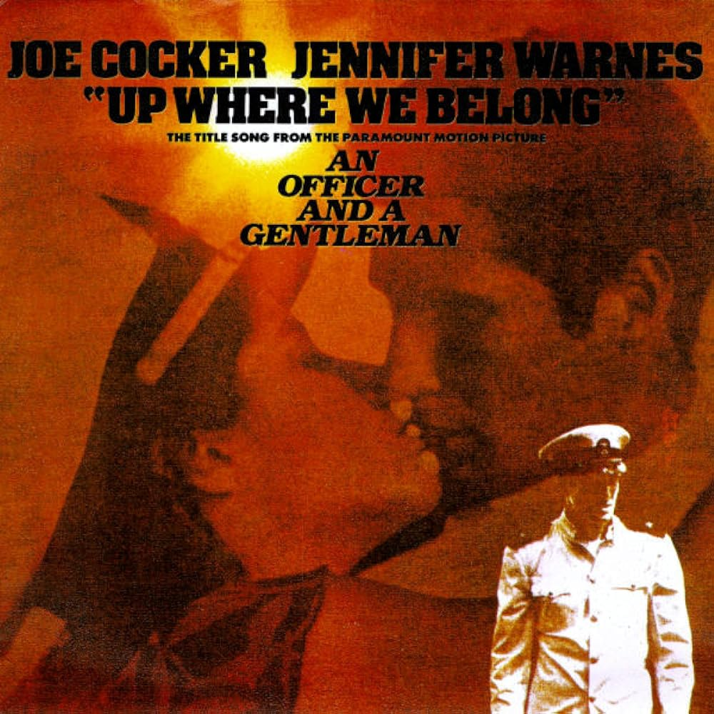
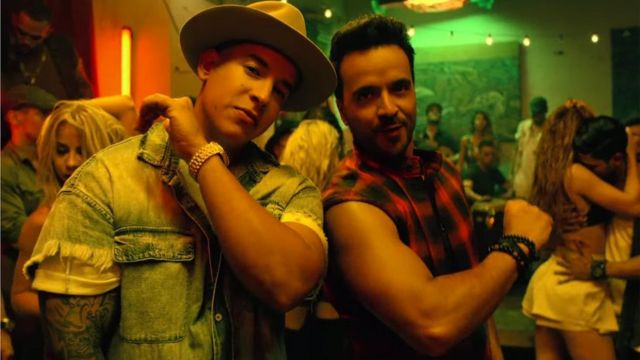

Hubo una época en que la unión de dos artistas era un acontecimiento para recordar. Con la llegada de la distribución digital, el consumo de la música cambió y ahora las plataformas musicales están atestadas de música, cuyos intérpretes no son un artista o un grupo, sino varios.
El “featuring”, comúnmente utilizado en la industria musical para indicar la participación de un artista invitado en una canción, es una práctica que ha cobrado relevancia en diversos géneros musicales, brindando la oportunidad de colaboración entre artistas y aportando variedad a las producciones.
El aumento de esta tendencia a través de los años puede visualizarse en el siguiente gráfico, donde, mediante un análisis de las canciones del top 50 semanal de los Billboard, se evidencia, que a medida que avanza el tiempo,son más las colaboraciones que colman estas listas. Esto nos da una noción de su popularidad actual.
Tiempo:
Ranking:
Un poco de historia
En la década de 1950, las colaboraciones entre cantantes a menudo eran entre artistas que compartían el mismo sello discográfico.
Por ejemplo, muchos de los éxitos de duetos de la época eran entre artistas de Motown, como Marvin Gaye y Tammi Terrell, o entre artistas de Atlantic Records, como Ray Charles y Aretha Franklin.
En los años 60 y 70, las colaboraciones entre artistas comenzaron a ser más comunes y a menudo eran entre artistas de diferentes géneros musicales. Por ejemplo, la colaboración entre David Bowie y Mick Jagger en la canción "Dancing in the Street" en 1985 fue uno de los primeros ejemplos de una colaboración entre dos superestrellas del rock.
La primera canción en colaboración que ganó el Grammy a la Mejor Canción del Año fue "Up Where We Belong" en 1983, interpretada por Joe Cocker y Jennifer Warnes.

Con la llegada de la era digital y la globalización de la música, las colaboraciones entre artistas se han vuelto aún más comunes en las últimas décadas.
La facilidad para comunicarse y grabar desde diferentes lugares del mundo, la expansión de plataformas de streaming y la importancia de la promoción de la música en las redes sociales han llevado a que artistas de diferentes géneros y países se unan para crear nuevas canciones.
En ocasiones, el featuring, puede ser la llave de entrada de un artista al mercado de otro país. Se han visto colaboraciones de artistas de diferentes regiones. Tal es el caso de ´Despacito´, de gran popularidad en los Top Billboard, donde se unen los artistas latinoamericamenos Luis Fonsi y Daddy Yankee junto con Justin Bieber.

También suele ser útil a la hora de agitar la audiencia de un artista juntándolo con otro de diferente perfil.
O, simplemente, surge de la colaboración entre dos amigos que les apetece hacer música juntos.
Veamos algunas de las colaboraciones más populares.